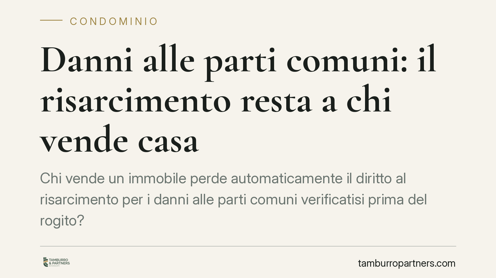

Danni alle parti comuni: il risarcimento resta a chi vende casa
Chi vende un immobile perde automaticamente il diritto al risarcimento per i danni alle parti comuni verificatisi prima del rogito? La Cassazione, con l'ordinanza 16396/2025, risponde in modo netto: quel credito spetta a chi era proprietario quando il danno si è prodotto. L'acquirente ne beneficia solo se il diritto gli viene ceduto per iscritto. Una precisazione che incide su rogiti e trattative.

Il principio affermato dalla Cassazione
La Corte di Cassazione, con l'ordinanza n. 16396/2025, torna su una questione tutt'altro che teorica: a chi appartiene il credito risarcitorio quando le parti comuni di un edificio subiscono un danno e, poco dopo, l'unità immobiliare viene venduta?
La risposta dei giudici è lineare. Il diritto al risarcimento sorge nel patrimonio di chi è proprietario nel momento in cui il danno si verifica. Si tratta di un credito autonomo, distinto dalla proprietà del bene: non segue l'immobile in modo automatico al passaggio di mano. Chi vende, quindi, resta titolare della pretesa risarcitoria maturata durante il suo periodo di proprietà.
Inquadramento normativo
Il ragionamento poggia sulla natura della proprietà condominiale. Gli articoli 1118 e 1119 del Codice civile disciplinano il diritto del singolo condomino sulle parti comuni: una quota indivisa, proporzionale al valore dell'unità, che non può essere separata dalla proprietà del piano o della porzione di piano.
Questo legame, però, riguarda il diritto reale sul bene comune, non il credito che nasce da un evento dannoso. Il risarcimento è un diritto di credito: rientra tra i rapporti obbligatori e, come tale, si trasferisce solo attraverso una cessione, non per il semplice fatto che l'immobile cambia proprietario.
La gestione delle parti comuni e la relativa rappresentanza processuale competono all'amministratore ai sensi degli articoli 1130 e 1131 c.c. Ma quando il danno colpisce beni comuni e riverbera sul patrimonio del singolo condomino, la legittimazione ad agire per il risarcimento della quota di pertinenza spetta al condomino stesso. E, per l'appunto, a quello che era tale al momento del fatto.
Perché la distinzione conta
La differenza tra diritto reale e diritto di credito, apparentemente sottile, produce effetti concreti. Immaginiamo un'infiltrazione o un cedimento strutturale che danneggia le parti comuni prima della vendita. Se il rogito non dice nulla sul punto, l'acquirente non eredita il diritto a farsi risarcire quel danno: la pretesa resta del venditore, che potrebbe non avere più alcun interesse ad attivarsi.
Il risultato è un potenziale vuoto di tutela. L'acquirente convive con gli effetti materiali del danno ma non dispone del titolo per pretenderne il ristoro; il venditore ha il titolo ma non subisce più il pregiudizio. È una situazione che si risolve solo a monte, in sede di contratto.
Implicazioni pratiche
Per chi acquista, l'ordinanza è un invito alla verifica preventiva. Prima di firmare occorre accertare se esistono danni pregressi alle parti comuni e se, per quei danni, sia pendente o ipotizzabile un'azione risarcitoria.
Per chi vende, la pronuncia conferma che il credito maturato resta nella propria disponibilità: può conservarlo, farlo valere autonomamente o cederlo all'acquirente, ma solo con una previsione espressa.
Per l'amministratore, resta ferma la gestione unitaria delle parti comuni, ma è opportuno che tenga traccia degli eventi dannosi e delle relative posizioni, utile a chiarire chi possa vantare pretese.
Cosa fare in concreto
- Se acquistate, richiedete all'amministratore una dichiarazione aggiornata su danni in corso o contenziosi relativi alle parti comuni, prima del rogito.
- Inserite nel contratto una clausola di cessione espressa del credito risarcitorio maturato dal venditore, indicando l'evento dannoso e la relativa pretesa.
- Se vendete, valutate se conservare il credito o trasferirlo: in entrambi i casi disciplinatelo per iscritto, evitando ambiguità.
- Verificate i termini di prescrizione dell'azione risarcitoria prima di definire la trattativa, per non trasferire un diritto ormai estinto.
- Coinvolgete un professionista nella redazione della clausola: una formulazione generica rischia di non produrre l'effetto voluto.
La vendita di un immobile in condominio non si esaurisce nel trasferimento delle mura. Anche i diritti nati prima del rogito meritano attenzione: ignorarli significa lasciarli, di fatto, senza titolare operativo.
---
*Contributo informativo a cura di Tamburro & Partners - Avv. Giuseppe Tamburro. Non costituisce parere legale.*
Ogni condominio ha una storia a sé.
Se gestisci un'amministrazione e vuoi un confronto su una specifica questione condominiale, scrivi allo studio. Ti rispondiamo entro un giorno lavorativo.